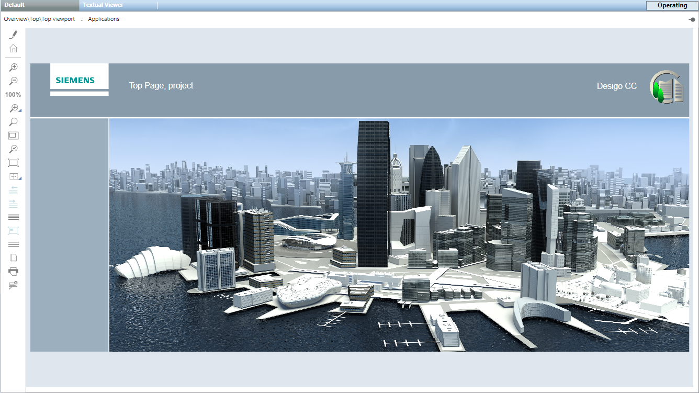
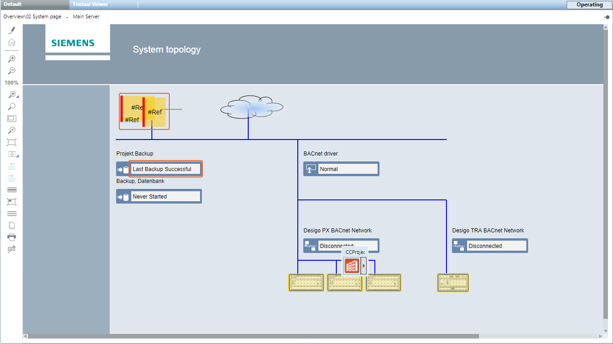
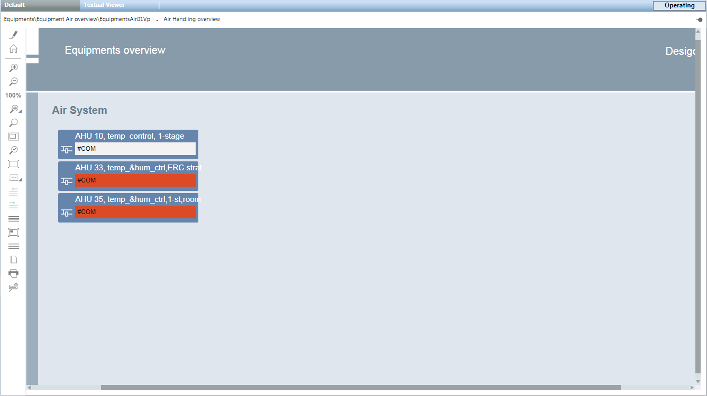
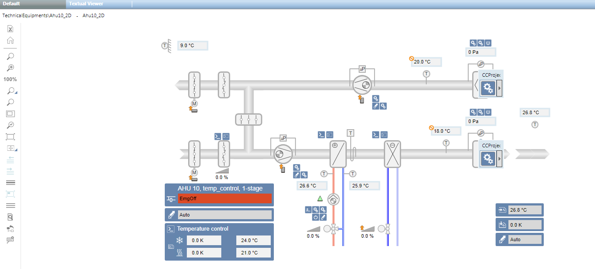
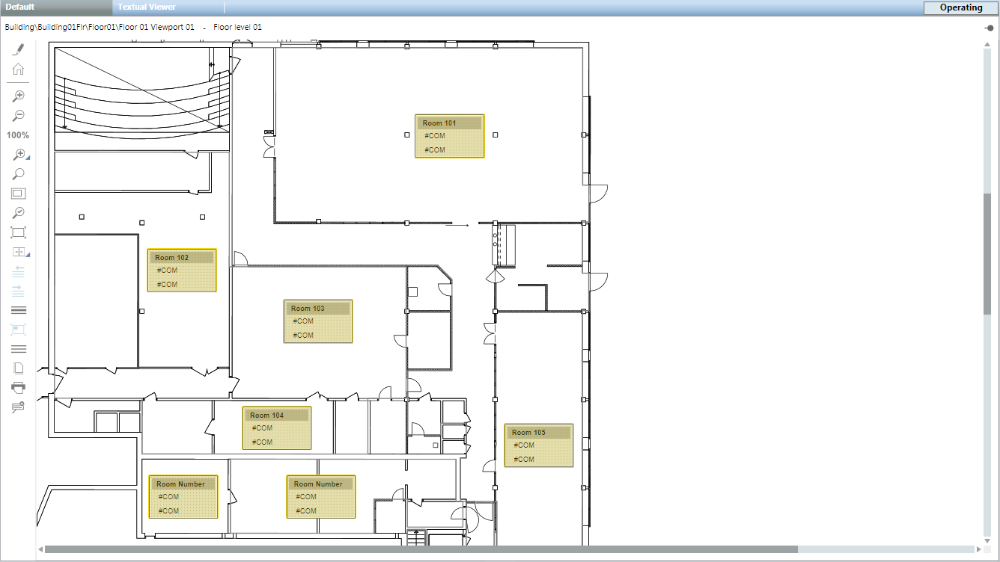
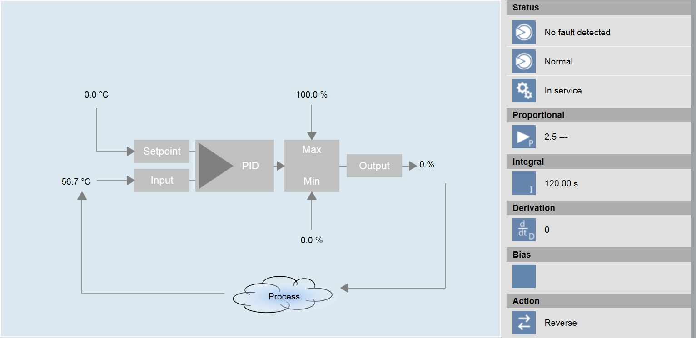
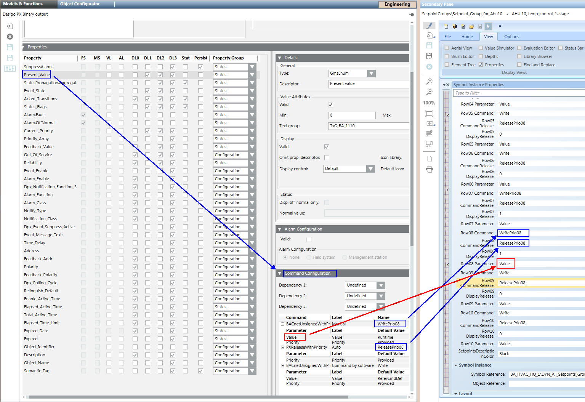

Graphics Pages in the Project
The graphical user interface is the most important interface for operating plants. In Desigo CC, graphic operation takes place in System Browser. The graphics page opens by clicking an object in System Browser (to open the graphics pages, see Navigation Concept). The corresponding graphics page opens based on the selected object:
- Start Page
- System Topology
- Plant Overview
- Plants
- Floor Plan
- Viewport of a Graphics Page
- Graphic Template
Start Page
The Start Page (also referred to as Home page or Top page) displays one or more buildings of the corresponding plant. Typical information on the Start page includes:
- Weather information
- Outside temperature
- Outside humidity
- Wind speed
- Solar radiation
- Overview information in the Logical View

System Topology
The System Topology displays the network of the plant in question. Typical information on the System Topology page includes:
- Server state
- Information on project backup
- Information on database backup (history database)
- Driver states
- Network state
- Automation station state

Plant Overview
The Plant Overview displays the state on multiple plants. The layout of Overview pages depends on the particular project. The plant states are structured, depending on project size, by building > floor > electrical/mechanical installation. On a smaller project, all plant states from various mechanical and electrical installations can also be created on a single Overview page.
Typical information on an Overview page includes:
- Plant state
- Hours of operation
- Meter values

Plants
The Plant page displays a plant with the corresponding devices. Typical information on the Plant page includes:
- Plant state
- Aggregate
- Fan
- Pumps
- Boilers
- Burners
- Components
- Sensors
- Thermostats
- Counter
- Static objects
- Channels
- Piping
- Texts

Floor Plan
The Floor Plan is the reproduction of a space (for example, a floor). Typical information on the Floor Plan includes:
- State from room:
- Operating Mode
- Temperature
- Lighting
- Fire detector
- Blinds
- Video cameras
- Access Control

Viewport
The graphics page viewport is used for the following:
- Displays an extract of an existing graphics page (see Viewport of a coffee machine).
- Is a copy of an existing graphics page. Always used wherever objects must be linked without a data point reference (for example, Overview pages).
Graphic Template
A Graphic Template displays, in graphic form, data points associated with a standardized Desigo building automation and control function. Typical information in a Graphic Template includes:
- PID Controller
- Cascade controller
- Heating curve
- Room application
These Graphic Templates do not require engineering. They are automatically recognized and displayed by Desigo CC when selecting the object data in System Browser. The Desigo building automation and control function name forms the basis for automatic recognition.

Plant Operator Tableau
The plant operator tableau is a custom compilation of the most important information for the user to operate plants. A maximum of 15 pieces of information, including title and spaces, can be configured on a graphic page.

A standard template, configured per the plant information, is used to engineer the plant operator tableau. A specific graphic page must be created for each plant operator tableau. The plant operator tableau is opened at Related items > Graphics.
For related procedures or workflows, see the step-by-step section Create a Plant Operator Tableau.
Configuration properties
Configuration properties for the plant operator tableau | ||
Parameter | Description | |
Alternative Title | Text field for the group title | |
Reference | Data point reference | |
Type | 0 | Defines an analog value |
1 | Defines a multistate value | |
2 | Defines an empty line | |
3 | Defines a title line | |
| ||
Command | Write | Default entry without priority array. |
WritePrio08 | The value is dependent upon the entry in the object model of the applicable subsystem. | |
CommandRelease | ReleasePrio08 | The value is dependent upon the entry in the object model of the applicable subsystem. |
DisplayRelease | 1 | 0 = The Release button is not visible. 1 = The Release button is visible. |
Parameter | Value | Value entered in Expander Command configurator in column Command under Parameter. |

Check the Spelling of the Write Command
The write command is dependent upon the applicable subsystem. Check the write command by selecting the the object model (for example binary output) in the library:
Blue: Write and release.
Red: Parameter.

Related items
For consistent single-click operation, the most important plant information must be linked to a graphics page. Typical information linked on each graphics page includes:
- Schedules
- Plant on/off
- Night setback
- Trend
- Online Trend
- Offline Trend
- Reports
- Detailed information
- Documents
- Supplier list
- Information on troubleshooting faults
- Related Items can be used with all existing System Browser information. Information may be grouped under the Related Items tab depending on the type.
In the event the user selects the graphics page, all related items on the additional information are displayed in the Contextual pane of the Related Items tab.